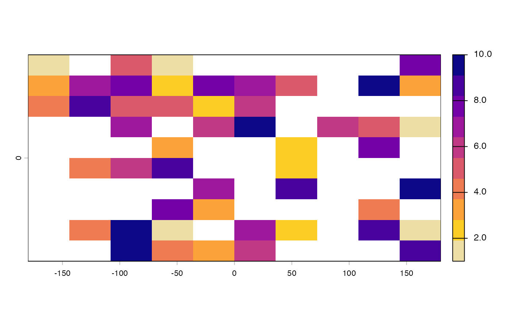

Compute importance breaks for a stewardship connections raster
Source:R/stewardship.R
importance_breaks.RdDerives quantile-based bin breaks for displaying a stewardship connections
raster returned by stewardship_connections(). The lower tail of the
distribution (cells at or below the lower_quantile of non-zero values) is
collapsed to a single low-importance class. The upper portion is divided
into n_bins equal-quantile bins.
Arguments
- x
SpatRaster; a single-layer stewardship connection raster, typically the
$connectionelement returned bystewardship_connections().- lower_quantile
numeric; quantile (in
[0, 1)) of the non-zero cell values used as the lower cutoff. Cells below this quantile are pooled into a low-importance class (returned asNAwhenreturn_raster = TRUE). Defaults to0.5(the median of non-zero cells).- n_bins
integer; number of display bins for cells at or above the
lower_quantilecutoff. Defaults to10.- return_raster
logical; if
FALSE(default), return the numeric break values. IfTRUE, return a reclassified SpatRaster with integer cell values in1:n_bins; cells below the cutoff areNA.
Value
When return_raster = FALSE (default), a numeric vector of `n_bins
2
break values:0, thelower_quantilecutoff, andn_binsupper quantile boundaries. Whenreturn_raster = TRUE, a single-layer [SpatRaster][terra::SpatRaster] with integer cell values in1:n_bins(cells below the cutoff areNA), ready to plot withcol = ebirdst_palettes(n_bins)`.
Details
Colors for the bins can be obtained from ebirdst_palettes() with
n = n_bins. The function deliberately does not return a palette so that
colors remain under caller control.
Examples
# create a synthetic connection raster
r <- terra::rast(nrows = 10, ncols = 10, vals = runif(100, 0, 0.5))
# default: return breaks (length = n_bins + 2 = 12)
brks <- importance_breaks(r)
length(brks)
#> [1] 12
# return a classified raster for direct plotting
r_class <- importance_breaks(r, return_raster = TRUE)
terra::plot(r_class, col = ebirdst_palettes(10))
